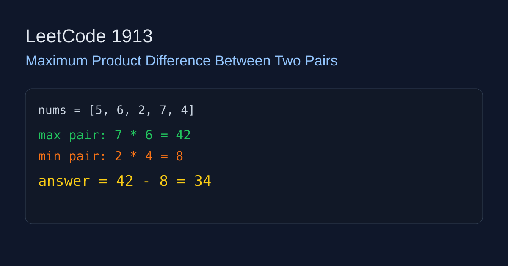

LeetCode 1913: Maximum Product Difference Between Two Pairs (Sorting / Greedy)
LeetCode 1913SortingGreedyWe need the maximum value of (a*b) - (c*d) where all four elements come from different indices.
Source: https://leetcode.com/problems/maximum-product-difference-between-two-pairs/

English
Idea
To maximize the difference, we should multiply the two largest numbers and subtract the product of the two smallest numbers.
Algorithm
Sort nums. Then answer is nums[n-1]*nums[n-2]-nums[0]*nums[1].
Complexity
Time: O(n log n), Space: O(1) extra (ignoring sort internals).
Reference Implementations (Java / Go / C++ / Python / JavaScript)
class Solution {
public int maxProductDifference(int[] nums) {
java.util.Arrays.sort(nums);
int n = nums.length;
return nums[n - 1] * nums[n - 2] - nums[0] * nums[1];
}
}func maxProductDifference(nums []int) int {
sort.Ints(nums)
n := len(nums)
return nums[n-1]*nums[n-2] - nums[0]*nums[1]
}class Solution {
public:
int maxProductDifference(vector& nums) {
sort(nums.begin(), nums.end());
int n = nums.size();
return nums[n-1] * nums[n-2] - nums[0] * nums[1];
}
}; class Solution:
def maxProductDifference(self, nums: List[int]) -> int:
nums.sort()
return nums[-1] * nums[-2] - nums[0] * nums[1]var maxProductDifference = function(nums) {
nums.sort((a, b) => a - b);
const n = nums.length;
return nums[n - 1] * nums[n - 2] - nums[0] * nums[1];
};中文
思路
要让 (a*b)-(c*d) 最大，应该让 a,b 取最大的两个数，让 c,d 取最小的两个数。
算法
先排序，答案就是 nums[n-1]*nums[n-2]-nums[0]*nums[1]。
复杂度
时间复杂度：O(n log n)，空间复杂度：O(1) 额外空间（不计排序内部开销）。
多语言参考实现（Java / Go / C++ / Python / JavaScript）
class Solution {
public int maxProductDifference(int[] nums) {
java.util.Arrays.sort(nums);
int n = nums.length;
return nums[n - 1] * nums[n - 2] - nums[0] * nums[1];
}
}func maxProductDifference(nums []int) int {
sort.Ints(nums)
n := len(nums)
return nums[n-1]*nums[n-2] - nums[0]*nums[1]
}class Solution {
public:
int maxProductDifference(vector& nums) {
sort(nums.begin(), nums.end());
int n = nums.size();
return nums[n-1] * nums[n-2] - nums[0] * nums[1];
}
}; class Solution:
def maxProductDifference(self, nums: List[int]) -> int:
nums.sort()
return nums[-1] * nums[-2] - nums[0] * nums[1]var maxProductDifference = function(nums) {
nums.sort((a, b) => a - b);
const n = nums.length;
return nums[n - 1] * nums[n - 2] - nums[0] * nums[1];
};
Comments